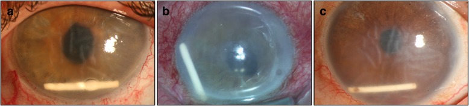
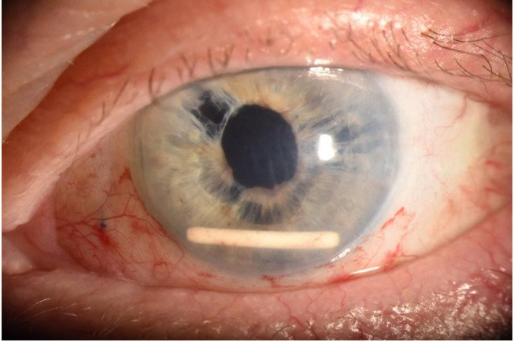
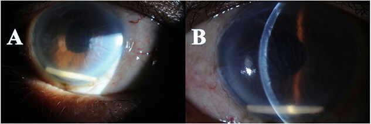
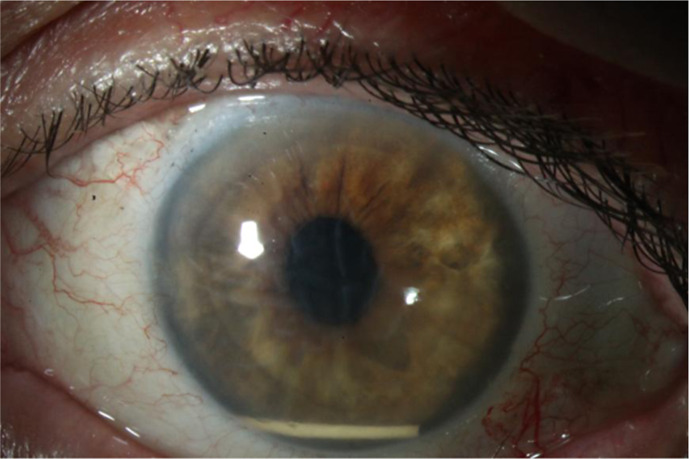

1428 — Phù giác mạc mất bù sau implant corticoid lạc vào tiền phòng / Corneal decompensation after anterior chamber migration of a dexamethasone implant
Tags: pattern:phu-giac-mac pattern:vat-the-tien-phong pattern:nep-descemet pattern:mat-mot-ben pattern:giam-thi-luc-dot-ngot pattern:bong-bieu-mo vung:mat vung:giac-mac vung:tien-phong vung:goc-tien-phong vung:dich-kinh protocol:slit-lamp protocol:AS-OCT protocol:pachymetry protocol:specular-microscopy protocol:UBM protocol:B-scan protocol:OCT-hoang-diem score:ECD score:CCT incidentaloma:implant-lac
Mức chắc chắn (certainty): tổng hợp y văn (literature synthesis) — 1 nghiên cứu đa trung tâm về tỉ lệ lạc (468 bệnh nhân), 1 tổng quan 59 bệnh nhân, 1 loạt ca 32 ca tập trung vào tỉ lệ ghép giác mạc, 2 ca nguyên văn có ảnh, và 2 nghiên cứu về nội mô khi KHÔNG lạc. Toàn bộ bằng chứng là ca báo cáo/đoàn hệ hồi cứu, không có RCT.
Vì sao bài này quan trọng: đây là biến cố hiếm nhưng để lại di chứng vĩnh viễn của một thủ thuật được làm hằng ngày. Bệnh nhân đến với mờ mắt không đau một bên, vài ngày đến vài tuần sau tiêm; nếu bác sĩ không yêu cầu bệnh nhân nhìn xuống và soi khe sáng vùng góc dưới, tổn thương nội mô tiếp tục trong khi giác mạc vẫn trong — và khi đã phù rõ thì 37,5% phải ghép giác mạc. Bài 1411 đã phủ tăng nhãn áp do corticoid; bài này phủ tai biến cơ học của cùng loại thuốc — hai biến cố hay đi cùng và xử trí ngược nhau (bài 1411: theo dõi/giảm liều; bài này: lấy implant ngay).
1. Tổng quan bệnh học – cơ chế hình ảnh
- Vật thể gây bệnh: implant dexamethasone (Ozurdex) = 0,7 mg dexamethasone trong ma trận PLGA (acid poly-lactic-co-glycolic), kích thước 0,46 mm đường kính × 6 mm chiều dài, đưa vào bằng kim 22 G, nhả thuốc tới 6 tháng, tự tan sau đó. Đây là một thanh cứng, không mềm như thuốc nước.
- Vì sao nó đi ra trước — hai điều kiện phải cùng có:
- Có đường đi: khuyết bao sau/bao trước, đứt dây chằng Zinn (zonular dialysis), mống mắt dựng (iris claw), lỗ mống mắt/basal iridectomy, lỗ YAG, hoặc khoảng trống giữa mống mắt và mặt trước thấu kính nhân tạo. Trong ca có implant Carlevale (IOL xuyên củng mạc thế hệ mới, đường kính 13,4 mm), tác giả giải thích chính độ dày 0,46 mm của implant "gần bằng một nửa khoảng trống quan sát được giữa đồng tử và mặt phẳng thấu kính" — nghĩa là IOL "chắn tốt hơn" vẫn không đủ.
- Mất giá đỡ: cắt dịch kính (PPV) làm dịch kính hóa lỏng, mất khung gel giữ implant → dòng đối lưu + chuyển động mắt đẩy implant về trước. Vì vậy PPV là yếu tố nguy cơ mạnh nhất, và vô nhãn (aphakia) là mức độ nặng nhất của "mất giá đỡ".
- Tại sao nó nằm ở GÓC DƯỚI: trong thủy dịch (nước), thanh PLGA nặng hơn nước → chìm xuống 6 giờ của tiền phòng. Hệ quả thực hành: phù giác mạc khu trú vùng dưới, và đo độ dày trung tâm (CCT) có thể bình thường trong khi vùng dưới đã mất bù.
- Tại sao giác mạc phù: nội mô là một lớp tế bào lục giác đơn, bơm Na⁺/K⁺-ATPase hút nước ra khỏi mô đệm; người trưởng thành có ECD ≈ 2.200–2.500 tế bào/mm² và giảm ~0,6%/năm, không tái sinh. Thanh implant cọ cơ học vào nội mô → chết tế bào tại chỗ → vùng đó mất bơm, mô đệm hydrat hóa → dày lên và tán xạ ánh sáng. Trình tự hình ảnh: nếp Descemet (striate keratopathy) → phù vi nang → bọng nước biểu mô (bullous keratopathy).
- Vì sao trên khe sáng implant TRẮNG đục: ma trận polymer và tinh thể dexamethasone có chiết suất khác thủy dịch → tán xạ mạnh; implant không cản quang nên CT không thấy, MRI không có tín hiệu — chẩn đoán hoàn toàn bằng đèn khe.
- Vì sao phù có thể KHÔNG hồi phục dù đã lấy implant: nội mô chết không mọc lại; các tế bào còn sống to ra và di chuyển bù (CV tăng, hexagonality giảm) nhưng không đủ khi mất quá nhiều. Vì vậy thời gian từ khởi phát đến can thiệp là biến số tiên lượng: trong loạt 32 ca, nhóm phải ghép giác mạc có khoảng cách từ khởi phát triệu chứng đến mổ dài hơn có ý nghĩa (p = 0,007).
- Số liệu định lượng cốt lõi:
- Tỉ lệ lạc: 1,6% tính trên số lần tiêm ở 468 bệnh nhân (đa trung tâm Pan-American); mắt đã cắt dịch kính 4,8% so với 1,6% ở mắt không cắt dịch kính; liên quan phẫu thuật đục thủy tinh thể (p = 0,043) và tình trạng IOL (p = 0,005), xu hướng với cắt dịch kính (p = 0,057).
- Thời điểm phát hiện: trung bình 19,4 ± 14,5 ngày sau tiêm (32 ca); có ca 7 ngày (Carlevale) và 8 ngày; muộn hơn cũng gặp.
- Hậu quả: tổng quan 59 bệnh nhân: 98% có ít nhất 1 yếu tố nguy cơ, 83% có biến chứng nặng; loạt 32 ca: 65,6% phải lấy implant, 18,8% đưa về dịch kính, 12,5% theo dõi, 37,5% (12/32) phải ghép giác mạc, 6,3% phải ghép lần hai.
- Khi KHÔNG lạc, tổn thương nội mô rất nhẹ: 22 mắt tiêm Ozurdex vì tắc tĩnh mạch võng mạc: ECD 2.211,7 ± 370,6 → 2.207,1 → 2.163,8 tế bào/mm² lúc 3 tháng (−2,2%, p = 0,013 và p = 0,009), CV và hexagonality không đổi, CCT 567,5 → 556,5 µm không đổi. Kết luận: thuốc trong dịch kính không phá nội mô; chỉ khi implant CHẠM nội mô mới phá.
- Tăng nhãn áp là "đòn thứ hai": cùng đoàn hệ trên, IOP 14,73 → 17,05 mmHg lúc 1 tháng (p = 0,002) và 17,15 mmHg lúc 3 tháng (p = 0,003).
- Tín hiệu dược cảnh giác: phân tích 1.588 báo cáo FAERS 2010–2024 xác định "corneal decompensation" là biến cố không có trên nhãn thuốc (nhóm rối loạn mắt ROR 45,11, PRR 23,71).
2. Mẫu hình + chẩn đoán phân biệt theo vị trí (Gamut)
Mẫu hình chốt: mắt một bên, đã mổ đục thủy tinh thể ± cắt dịch kính, mờ mắt không đau 1–4 tuần sau tiêm nội dịch kính → thấy thanh trắng bo tròn hai đầu, dài ~6 mm, nằm ngang ở góc dưới tiền phòng, kèm phù giác mạc vùng dưới và nếp Descemet.
- Theo vị trí implant (quyết định cách xử trí):
- Góc dưới tiền phòng, chạm nội mô — thể thường gặp nhất, phải lấy sớm.
- Tự do trước mống mắt / trong đồng tử — có thể đưa về sau bằng giãn đồng tử + tư thế.
- Sau mống mắt / trong rãnh thể mi (sulcus) — không thấy trên đèn khe, cần UBM; nguy cơ teo mống mắt, dính, và vẫn có thể gây viêm mạn.
- Trong bao túi (in-the-bag) hoặc trong buồng dịch kính — chưa phải biến cố, nhưng là nguồn dự trữ cho lần lạc sau.
- Gamut "thanh trắng trong tiền phòng": implant dexamethasone; mảnh thể thủy tinh/bao còn sót; vòng Soemmering; đầu ống dẫn lưu (tube shunt); mảnh ống cannula/silicon; mảnh ghép nội mô DMEK bong; giọt dầu silicon (không phải thanh); dị vật nội nhãn.
- Gamut "phù giác mạc MỘT BÊN ở mắt đã mổ": implant chạm nội mô; mảnh thể thủy tinh còn sót; TASS (toxic anterior segment syndrome); viêm nội mô do HSV/CMV; góc đóng cấp; tăng nhãn áp do corticoid; bong mảnh ghép DSAEK/DMEK; hội chứng UGH; thiếu nội mô do chấn thương mổ.
- Ba câu hỏi lâm sàng (thay cho mnemonic gượng): (1) Có tiêm nội dịch kính trong 4 tuần qua không? (2) Mắt có PPV/vô nhãn/khuyết bao–dây chằng không? (3) Có thanh trắng ở góc dưới, kèm nếp Descemet vùng dưới không? — "có" cả 3 → implant lạc cho tới khi chứng minh ngược.

- Ảnh: 3 mắt sau tiêm Ozurdex, implant nằm ngang ở 6 giờ, mức phù từ nhẹ (a) đến phù lan tỏa + nếp Descemet rõ (b, c). Nguồn BMC Ophthalmol 2019 (PMC6537356), CC BY 4.0.
3. Bảng so sánh phân biệt (ma trận đối chiếu)
| Thực thể (entity) | Hình ảnh điển hình | Chốt vào (rule-in) | Chốt loại (rule-out) | Gợi ý xác nhận |
|---|---|---|---|---|
| Implant dexamethasone lạc tiền phòng | Thanh trắng 6 × 0,46 mm, hai đầu bo tròn, nằm ngang góc dưới, phù giác mạc vùng dưới + nếp Descemet; đèn khe thấy bóng đổ ra sau | Tiền sử tiêm Ozurdex ≤ 4 tuần + thanh trắng đúng kích thước ở góc dưới + mắt pseudophakic/PPV | Không có tiền sử tiêm; thanh dài ≠ 6 mm hoặc bờ nham nhở; implant còn nguyên trong dịch kính trên B-scan | Đèn khe + B-scan (loại implant sau) + AS-OCT đo khoảng cách implant–nội mô |
| Mảnh thể thủy tinh/bao sau còn sót | Khối trắng xốp, bờ nham nhở, kích thước không đều, thường dính mống mắt hoặc ở góc trên | Mổ đục thủy tinh thể gần đây, mảnh không đối xứng, không di động theo tư thế | Hình que đều, bo tròn, đúng 6 mm, di động khi nghiêng đầu → loại | Soi kỹ bờ; không chọc hút mù |
| Vòng Soemmering | Vòng trắng sau mống mắt, trung tâm, cố định, thấy rõ khi giãn đồng tử | Vòng liên tục sau mống mắt, không ở góc, không di động | Nằm góc dưới, hình thanh rời → loại | Giãn đồng tử + chụp retroillumination |
| Đầu ống dẫn lưu (tube shunt) | Ống trong mờ, cố định, chạy từ góc trên–thái dương về van dưới kết mạc; có bóng khí/van | Thấy đường ống liên tục ra sau kết mạc; tiền sử đặt van | Không nối với kết mạc, đầu bo tròn tự do → loại | Đèn khe + UBM dọc đường ống |
| Mảnh ống cannula/silicon | Mảnh nhựa trong, bờ sắc cạnh, thường ở góc phụ thuộc | Tiền sử mổ nội nhãn ngay trước đó, mảnh không đều, có thể nhọn | Bờ bo tròn đều, đúng kích thước implant → loại | Đèn khe; ghi nhận vật liệu dùng trong mổ |
| Mảnh ghép DMEK bong | Mảnh mờ hình đĩa, mép cuộn, nằm sát nội mô sau ghép | Tiền sử DMEK/DSAEK, mảnh hình đĩa, không phải thanh | Hình thanh 6 mm → loại | AS-OCT thấy mảnh ghép tách khỏi mặt sau giác mạc |
| Giọt dầu silicon | Hình cầu trong suốt, khúc xạ, không trắng đục; thường nổi ở góc trên | Tiền sử bơm dầu, thấy mặt phân cách dầu–nước | Thanh trắng đục → loại | Đèn khe; không nhầm với implant |
| Phù giác mạc do nguyên nhân khác | Phù lan tỏa hoặc khu trú, không có thanh lạ | Không vật thể; có nguyên nhân riêng (HSV: giảm cảm giác + tế bào; góc đóng: tiền phòng nông; TASS: 24–48 giờ sau mổ) | Thấy thanh trắng ở góc dưới → loại | Đèn khe, soi góc, PCR dịch tiền phòng khi nghi nhiễm |
- Ảnh minh họa vị trí: implant nằm ngang ở góc dưới, phía trên là gai IOL xuyên củng mạc (intrascleral haptic) — bẫy điển hình: gai IOL cũng là "đường trắng" và dễ bị nhầm.

- Ảnh: Int Med Case Rep J 2021 (PMC8458021), CC BY-NC 4.0 — chỉ dùng phi thương mại, nguyên bản.
4. Protocol chụp + hệ phân độ/điểm chuẩn hóa
Chẩn đoán (làm ngay, không cần chờ):
- Đèn khe (slit-lamp): soi góc dưới ở tư thế bệnh nhân nhìn xuống, dùng khe sáng mỏng quét từ trên xuống; đánh giá (1) vị trí implant, (2) có chạm nội mô không, (3) nếp Descemet, (4) tế bào/flare, (5) IOP.
- AS-OCT (anterior segment OCT): đo CCT và khoảng cách implant–nội mô; implant là thanh tăng phản xạ có bóng đổ phía sau; theo dõi được kể cả khi giác mạc đục (khác soi nội mô).
- Siêu âm B-scan: xác nhận đã hết implant trong buồng dịch kính (bắt buộc trước khi kết luận "đã lấy hết").
- UBM (35–50 MHz): khi không thấy implant ở tiền phòng nhưng bệnh cảnh gợi ý → tìm ở rãnh thể mi/sau mống mắt.
- Soi nội mô (specular microscopy): chỉ làm được khi giác mạc còn trong; cho ECD, CV, % lục giác. Khi đã phù, không đáng tin — đừng dùng để quyết định.
- OCT hoàng điểm: loại phù hoàng điểm tái phát (lý do tiêm) và bong võng mạc.
Ngưỡng định lượng dùng trong theo dõi (kinh điển, không phải thang riêng của biến cố này):
- CCT bình thường 540 ± 30 µm; CCT > 700 µm = phù nặng, nguy cơ bọng nước; ca Carlevale: 655 µm kèm thị lực 20/400.
- ECD: mất > 50% hoặc ECD < 500–1.000 tế bào/mm² → không còn dự trữ, phù sẽ không hồi phục dù lấy implant.
- Đánh giá mức độ (mô tả, không có thang được xác nhận riêng): nhẹ = nếp Descemet, CCT < 600 µm; *trung bình* = phù vi nang, CCT 600–700 µm; *nặng* = phù đại thể/bọng nước, CCT > 700 µm.
Xử trí (thuật toán):
flowchart TD
A[Thanh trắng 6 mm ở tiền phòng] --> B{Chạm nội mô hoặc có phù?}
B -->|Có| C[Lấy implant trong 24-48 giờ]
B -->|Không| D{Implant còn nguyên, góc mở?}
D -->|Có| E[Giãn đồng tử + tư thế + massage: thử đưa về sau]
D -->|Không| F[Lấy implant chủ động]
E --> G{Tái lạc?}
G -->|Có| F
G -->|Không| H[Theo dõi CCT + ECD]
C --> H
H --> I{Phù còn sau 1-3 tháng?}
I -->|Không| J[Hồi phục: theo dõi ECD 3-6 tháng]
I -->|Có| K{PPV hoặc IOL xuyên củng mạc?}
K -->|Có| L[Ưu tiên DSAEK]
K -->|Không| M[DSAEK hoặc DMEK]
L --> N[Ghép nội mô]
M --> N
- Lấy implant — kỹ thuật: paracentesis 1 mm ở rìa giác mạc, bơm viscoelastic để tách implant khỏi nội mô và bảo vệ nội mô, rồi hút bằng catheter 20 G gắn bơm 3 mL hoặc forceps — mục tiêu lấy nguyên khối, không làm vỡ (mảnh PLGA gây viêm mạn). Trong ca Carlevale, viscoelastic + catheter 20 G lấy được một mảnh; thị lực 20/400 → 20/100 sau 7 ngày → 20/32 sau 1 tháng, CCT 655 → 560 µm.
- Đưa về sau không mổ: giãn đồng tử + tư thế đầu thấp (reverse Trendelenburg) + massage nhẹ — thành công 14% trong tổng quan 59 ca; 3/32 ca tái lạc sau khi đưa về sau → phải theo dõi tiếp.
- Theo dõi để implant tự tan: 4 ca trong loạt 32; 2 ca vẫn phải ghép giác mạc → không phải lựa chọn an toàn khi đã có phù/chạm nội mô.
- Ghép giác mạc: DSAEK (mảnh dày hơn, dễ thao tác) thường được chọn ở mắt đã PPV / IOL xuyên củng mạc vì mất phản áp của mống mắt–thể thủy tinh làm mở và định vị mảnh ghép khó — nhiều phẫu thuật viên chuyển sang DSAEK đúng vì lý do này; DMEK cho thị lực tốt hơn và vẫn làm được ở mắt đã cắt dịch kính bằng kỹ thuật áp lực liên tục từ ngoài, nhưng rebubble 37,5% (3/8); ngoài ra IOL xuyên củng mạc làm khí dễ đi ra dịch kính sau, là nguyên nhân quan trọng của bong mảnh ghép; PKP chỉ khi sẹo đậm/loạn dưỡng nặng. Ở mắt có van lọc (Ahmed), sống mảnh ghép 1 năm 87% (DSAEK) vs 91% (DMEK), 2 năm 78% vs 74% — tương đương.
- Mốc thời gian: quyết định ghép trong loạt 32 ca được đưa ra 1–16 tháng sau xử trí implant; không hứa hồi phục trước 3 tháng vì nội mô còn đang bù.
5. Biến thể bình thường và cạm bẫy
- "Giác mạc còn trong" KHÔNG loại trừ tổn thương nội mô: ECD dự trữ cho phép bù trong nhiều tuần; nếp Descemet là dấu hiệu sớm nhất, xuất hiện trước khi CCT tăng rõ.
- Chỉ đo CCT trung tâm: implant nằm 6 giờ → phù khu trú vùng dưới; đo trung tâm có thể bình thường. Phải soi toàn bộ giác mạc, chụp bản đồ độ dày nếu có.
- Nhầm "đường trắng": gai IOL xuyên củng mạc, cạnh IOL, đầu ống dẫn lưu, vòng Soemmering đều trắng. Phân biệt bằng kích thước (6 mm), độ bo tròn đầu, vị trí góc dưới, và tiền sử tiêm.
- Implant có thể nằm SAU mống mắt: không thấy trên đèn khe, bệnh nhân vẫn đau/viêm → UBM là bắt buộc khi nghi.
- Chỉ 3/32 bệnh nhân tự thấy "đường trắng" khi soi gương → không thể dựa vào triệu chứng của bệnh nhân; phải dặn trước và hẹn khám sớm.
- Sau khi đưa implant về sau vẫn có thể tái lạc (3/32) — hẹn khám lại 1 tuần, 1 tháng; dặn bệnh nhân quay lại ngay nếu mờ lại.
- Implant tự tan trong tiền phòng không đồng nghĩa lành: 2/4 ca theo dõi vẫn phải ghép.
- Bẫy "thỏa mãn tìm kiếm": đã thấy implant là dừng — bỏ sót tăng nhãn áp do corticoid, bong võng mạc, phù hoàng điểm tái phát, hoặc viêm nội nhãn (cùng mắt, cùng thời điểm).
- Không chọc hút bằng kim nhỏ xuyên giác mạc trung tâm: thêm tổn thương nội mô và nguy cơ làm vỡ implant; dùng đường rìa + viscoelastic.
- CT/MRI không giúp: implant không cản quang, không có tín hiệu — đừng đặt bệnh nhân vào máy để "tìm dị vật".
6. Tự lượng giá — Blind Quiz ngay trên trang tĩnh
Ca 1 — nam 66 tuổi, mờ mắt phải 2 tuần sau tiêm

- Bối cảnh: mắt phải đã phaco + IOL xuyên củng mạc (do IOL lệch sau chấn thương); 7 tháng sau mổ xuất hiện phù hoàng điểm (độ dày trung tâm 856 µm) → tiêm Ozurdex. Hai tuần sau: mờ mắt không đau, thấy "vật trắng sau giác mạc".
- Câu hỏi: (1) Dấu hiệu chính ở tiền phòng và giác mạc? (2) Ba chẩn đoán phân biệt? (3) Dấu hiệu nào chốt chẩn đoán?
Bấm để hiện đáp án (findings + chẩn đoán)
- Dấu hiệu: thanh trắng 6 mm, hai đầu bo tròn, nằm ngang ở 6 giờ tiền phòng (A); khe sáng cho thấy nếp Descemet và phù mô đệm (B); B-scan không còn implant trong buồng dịch kính.
- Chẩn đoán: implant dexamethasone lạc tiền phòng, biến chứng của tiêm nội dịch kính ở mắt đã cắt dịch kính + IOL xuyên củng mạc (mất giá đỡ dịch kính + khoảng trống quanh IOL).
- Xử trí trong ca: nằm ngửa + liệt điều tiết (cycloplegic) → implant tự về sau, không phải mổ; đây là ngoại lệ, không phải chuẩn — nếu chạm nội mô/phù thì lấy ngay.
- Nguồn ảnh: J Surg Case Rep 2024 (PMC10924725), CC BY 4.0.
Ca 2 — nam 74 tuổi, 31 lần tiêm Ozurdex, mờ mắt 7 ngày sau mũi 32

- Bối cảnh: phù hoàng điểm do tắc tĩnh mạch võng mạc, tiêm mỗi 4 tháng; sau mũi 31 IOL lệch vào dịch kính → cắt dịch kính 25 G + IOL Carlevale; 1 tháng sau tiêm lại; 7 ngày sau: thị lực 20/400, IOP 9 mmHg, CCT 655 µm.
- Câu hỏi: (1) Vì sao IOL "chắn tốt hơn" vẫn để implant đi qua? (2) Có nên theo dõi? (3) Nếu phù không hết, chọn ghép gì và vì sao?
Bấm để hiện đáp án (findings + chẩn đoán)
- Dấu hiệu: implant ở góc dưới, phù giác mạc + nếp Descemet; CCT 655 µm; ME đã hết.
- Vì sao vẫn lạc: độ dày implant 0,46 mm gần bằng một nửa khoảng trống giữa đồng tử và mặt phẳng IOL → Carlevale (13,4 mm) chỉ giảm, không loại đường đi; mắt đã PPV nên mất giá đỡ.
- Xử trí: lấy implant ngày hôm sau bằng viscoelastic + catheter 20 G; 7 ngày: 20/100, 1 tháng: 20/32, CCT 560 µm, nếp Descemet hết.
- Nếu phù dai dẳng: DSAEK (mảnh dày, dễ thao tác khi mất phản áp mống mắt–thể thủy tinh) hợp hơn DMEK ở mắt PPV + IOL xuyên củng mạc; DMEK vẫn làm được nhưng nguy cơ khí ra dịch kính → bong mảnh ghép cao hơn.
- Nguồn ảnh: Case Rep Ophthalmol 2026 (PMC12851610), CC BY-NC 4.0 — phi thương mại, nguyên bản.
Ca 3 — câu hỏi quyết định (không cần ảnh)
- Bối cảnh: bệnh nhân đã lấy implant 6 tuần, CCT còn 640 µm, giác mạc phù nhẹ, không đau, ECD đo được 700 tế bào/mm².
- Câu hỏi: Theo dõi thêm hay ghép nội mô? Vì sao?
Bấm để hiện đáp án
- Ghép nội mô (DSAEK/DMEK) là hợp lý: ECD 700 tế bào/mm² nằm trong vùng mất dự trữ (< 1.000), phù đã kéo dài 6 tuần; nội mô không tái sinh nên chờ thêm không tạo thêm tế bào. Trong loạt 32 ca, quyết định ghép được đưa ra 1–16 tháng sau xử trí — nghĩa là theo dõi có giới hạn, không chờ vô hạn.
- Phản biện: nếu giác mạc còn trong và CCT < 600 µm, có thể theo dõi 3 tháng vì một số mắt hồi phục một phần; nhưng ECD < 1.000 là dấu hiệu không còn khả năng bù.
Bài liên quan chéo
- 1411 – Tăng nhãn áp do corticoid nội nhãn — cùng thuốc, biến cố khác: theo dõi IOP, không lấy implant.
- 1410 – Lấy dầu silicone và dầu tồn lưu — vật liệu nội nhãn và biến chứng cơ học trên giác mạc.
- 442 – Đánh giá glôcôm bằng OCT — kỹ thuật AS-OCT dùng cho đo độ dày giác mạc/góc.
- 1437 – Viêm màng bồ đào do ICI, 1438 – Viêm màng bồ đào giao cảm — viêm nội nhãn vô khuẩn sau can thiệp nội nhãn.
Ảnh
images/1428_phu-giac-mac-implant_AnteriorSegment3-cases_PMC6537356-Fig1-CCBY.jpg— 3 mắt, ba mức phù, CC BY 4.0.images/1428_phu-giac-mac-implant_AnteriorSegment_PMC8458021-Fig1-CCBYNC.jpg— implant + gai IOL, CC BY-NC 4.0.images/1428_phu-giac-mac-implant_AnteriorSegment_PMC10924725-Fig2-CCBY.jpg— quiz ca 1, CC BY 4.0.images/1428_phu-giac-mac-implant_AnteriorSegment_PMC12851610-Fig2-CCBYNC.jpg— quiz ca 2, CC BY-NC 4.0.- Chi tiết nguồn/giấy phép từng ảnh:
images/CREDITS.md.
Không dùng để chẩn đoán độc lập khi chưa có người hướng dẫn.